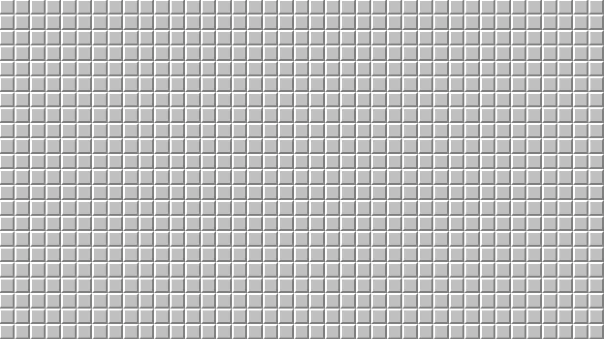
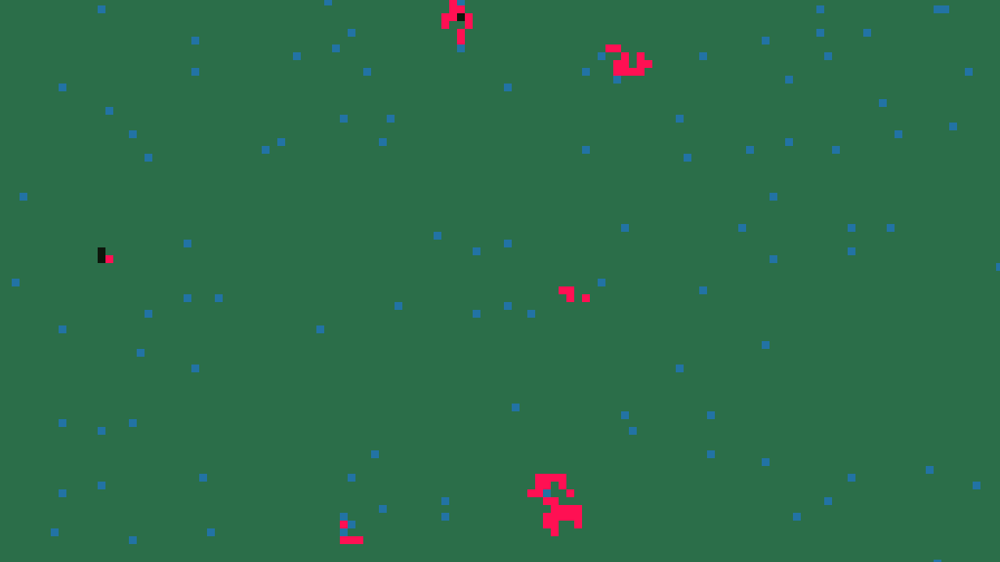
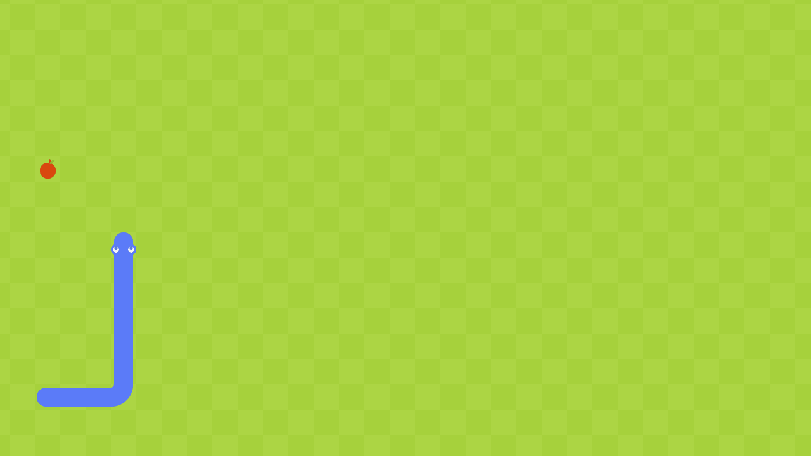
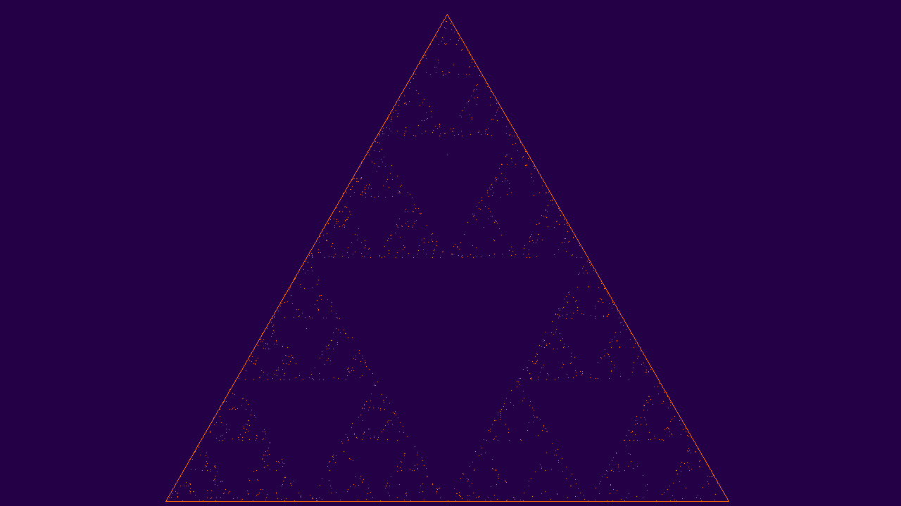

</Minesweeper_>

It is a reproduction of the famous Minesweeper game.
</_Outbreak Simulation>
This simulation is a model (therefore far from corresponding to reality) of an outbreak that would reach a given population represented by a grid, where each cell represents an individual.

</Mosaic Image_>

Make the mosaic of an image composed of images, which can be seen only by zooming.
</_Game of Life>
The Game of Life was invented by mathematician John Conway. It is a cellular automaton that consists of two steps. (It is actually not really a game, but more a kind of simulation).
</Snake_>

It is a reproduction of the famous game Snake, whose rules are quite well known. You are in the skin of the snake, and you want to eat apples, be careful not to go out of the field and not to eat yourself.
</_CV Maker>
Create and customize your CV easily on a web page in order to export it in .pdf format.

</ASCII Webcam_>

Film yourself with your webcam in ASCII in real time.
</_Minecraft Survival>
This is my first video game made from scratch. As its name indicates, it is based on the principle of Minecraft, but the gameplay changes completely.

</Sierpinski Triangle_>

The Sierpinski triangle is a geometrical figure of fractal type, that is to say that one can, among other things, zoom to infinity on this triangle.
</_ASCII Image>
Convert any image of any format to ASCII image in .txt format (in addition it allows to compress the file in some way).

</EseoNova_>

Campaign website of the EseoNova list at ESEO.
</_Portfolio>
A website that lists most of my projects.